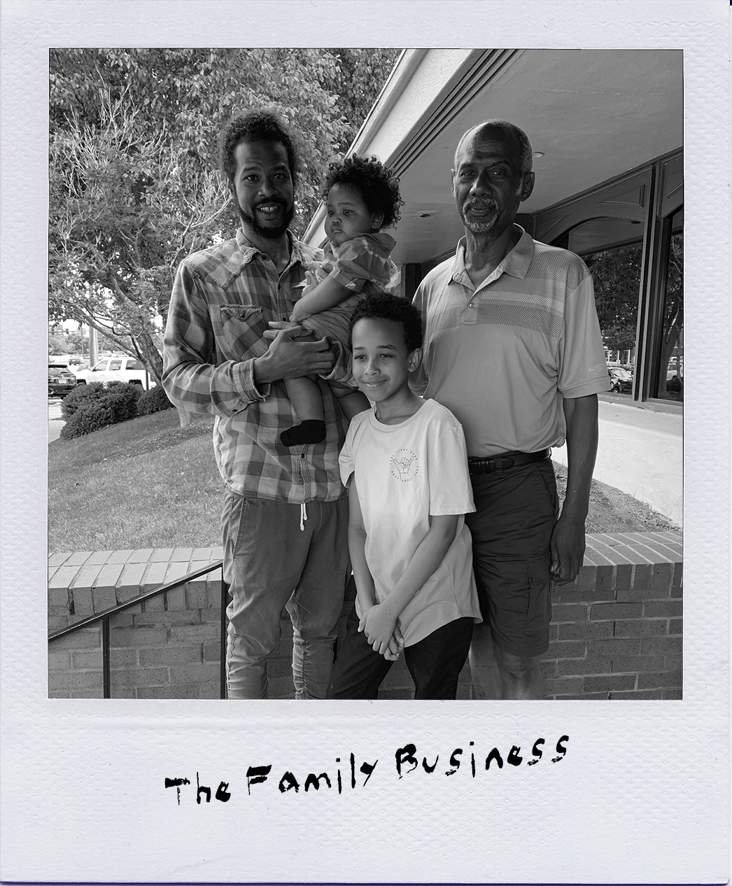

This is the short version of my life story.
PHD: Pretty Huge Decision
After graduating high school in St. Louis, I ventured south to Nashville to attend Vanderbilt University. After a few semesters, I had no real idea of what I planned on doing with an Electrical Engineering degree. That changed the summer heading into my senior year when I completed a research program at the University of Kentucky (mostly for the stipend and it beat sleeping in my childhood room in St. Louis). It was here I decided I'd get into research. So after 4 years in Nashville, I packed my bags and headed to West Lafayette, Indiana to attend Purdue University. I was accepted into a Direct PhD program. No masters needed. Just classwork and research... and more research. Sadly, I realized my desire for a PhD had little to do with a mission to change the world, but more to do with my ego being fed. And so, I switched to a Master's program and ended my time in Indiana after two and a half years and headed back to St. Louis until to figure out "what's next".
The Family Business
While figuring life out, I worked for my father. His started an engineering consulting company and could use another electrical designer. I spent my time there learning not just electrical design, but marketing, business development, IT and even would give presentations to acquire more business. In small businesses, you often wear many hats, so I appreciated my time working with my father because I got to experience so many different roles and learn what I liked and disliked. During this time, I also leaned more into my artistic talents. I rented out an office and setup a studio for after-hours. It was at this point I began working from 9am-6pm, writing lyrics from 6pm-9pm and recording from 9pm-4am. After months of 4 hours nights of sleep, I realized something had to give...
Rappers Don't Get Pension
I would have never thought watching a Batman movie would have any impact on my life. Perhaps this is why I'm not a fortune teller. There's a scene in The Dark Night Rises in which Bruce Wayne is attempting to climb out of a jail that's literally a hole in the ground. Time after time, Bruce ties himself to a rope (to catch him if he falls) and falls time and time again during the climb. To date, there had only been one person to ever escape the prison, a child. Eventually, Bruce learns of how the child escaped... "by doing it with no rope". This spoke VOLUMES to me. The next day, I maxed out a Guitar Center credit card and began my life as a rapper.
I released my first EP entitled "Black Sunday" Febuary 2, 2015 and quit my full-time job in May. I recorded countless songs, performed around the country,got interviewed by a ton of different publications and podcasts, and made some life-long friendships. And then I got some news that changed everything... my son was on the way.
Project Manager
Rappers don't get pensions or health insurance or 401k plans or any of the things your parents tell you to have when you're an adult. I never really worried about these things when pursuing music though. I was fine sacrificing for the sake of music when it came to me, but not when it came to my son. And so the search for something more "stable" began. After dusting the cobwebs off my LinkedIn profile, I secured a few job interviews. I ended up accepted an offer as a "Project Manager" at an electrical contracting company. Within 2 years, I was managing my first project (estimated to be $21M) and started a Diversity, Equity & Inclusion initiative and Committee. I even bought a house for my family of four. This was the most money I've ever made, but I hated the work. I wanted something that challenged me mentally, utilized complex problem-solving skills, and something that gave me the same feeling music always has. And I knew project management was NOT it.
Developer (Still Developing)
Knowing that a career switch was necessary, I began researching possibilities and asked friends for advice. Regardless of the source, tech kept popping up but it was such a large field that I still was unsure of what I would do in tech. Enter LaunchCode. I began LC101 in mid-September and caught the bug within a week. I finally was being mentally stimulated and most importantly found a passion reminiscent of my love for music. These days, I'm constantly digging through websites and forums, setting up 1:1's with TA's and potentials mentors and using any and all free time to further develop my skills. My schedule is actually becoming like it was when I first began rapping. I'm hopeful that it will lead to the same outcome of switch careers. In the meantime, still developing...